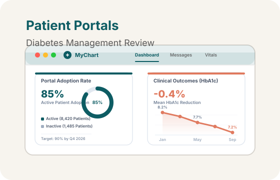

Enhancing Diabetes Management Through Patient Portals: Exploring Self-Management and Clinical Outcomes
Patient portal systematic review | Sacred Heart University (Sep 2025 – Dec 2025)
- Conducted a systematic review of 25 peer-reviewed studies (2020–2025) focused on patient portals in diabetes management.
- Evaluated key outcomes including HbA1c reduction, self-management behaviors, patient engagement, and portal adoption rates.
- Performed thematic analysis to identify trends in clinical outcomes, user experience, implementation strategies, and health equity.
- Assessed major barriers such as digital literacy, access disparities, and usability gaps affecting portal utilization.
- Synthesized evidence highlighting 0.3%–0.5% improvements in HbA1c among active portal users.
- Reviewed institutional strategies such as workflow integration, provider communication, and digital training programs.
- Developed actionable insights to improve patient engagement and digital health adoption for chronic disease management.
- Created a research poster summarizing findings for the Healthcare Informatics Capstone Poster Session – Fall 2025.
Digital Health
Electronic Health Records (EHR)
Patient Engagement
Systematic Review